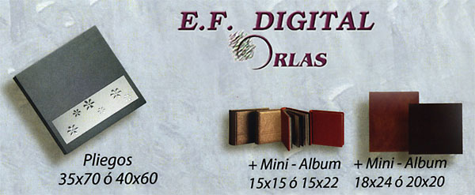
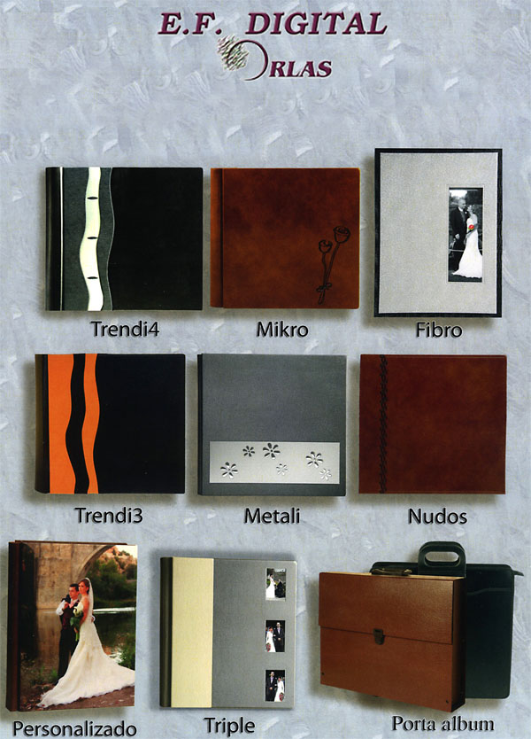

REPORTAJE ANALÓGICO
Álbum y reportaje de 60 fotos 420 €
Álbum y reportaje de 100 fotos 700 €
Álbum y reportaje de 150 fotos 900 €
Fotos extras 7 €
Álbum 60 €
Vídeo editado 450 €
ÁLBUM DIGITAL
Álbum de 60 hojas + 2 mini-álbumes + porta-album 1399 €
2 hojas extras 35 €
Vídeo editado 450 €
Reportaje personalizado, nos adaptamos a vuestra elección.
Os damos la posibilidad de elegir las fotos que queréis incluir en el álbum.
Reportaje sin límite de fotos.
Cada álbum es único, no usamos plantillas.
Retocamos las fotos sin coste adicional.
Alta calidad en el resultado.
